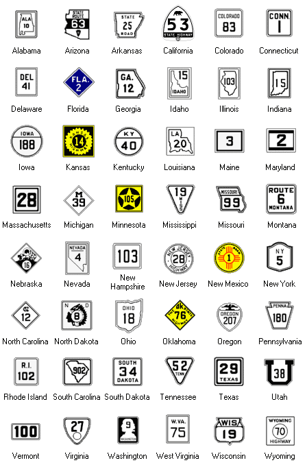

1940s State Highway Markers
A black and white sign image doesn't mean that the sign was necessarily black and white; please see the list of states for which the colors are unknown. If you know the color of signs for states in the list, please contact me.
